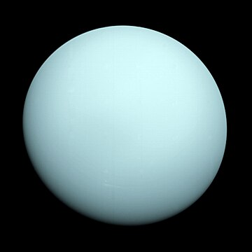

ورانوس[۱۱] هفتمین سیاره از نظر نزدیکی به خورشید[۱۲] و سومین سیاره از نظر اندازه و چهارمین سیاره از نظر جرم در سامانه خورشیدی است. اورانوس هر ۸۴ سال و ۷ روز یکبار به دور خورشید میگردد. همچنین هر ۱۷ ساعت و ۱۴ دقیقه یک دور به دور خودش میچرخد. اورانوس دارای بیش از ۲۷ قمر است که میراندا، آریل، آمبریل، تیتانیا و اوبرون از شناختهشدهترین آنها هستند. این سیاره را ویلیام هرشل در سال ۱۷۸۱ میلادی کشف کرد.[۱۳] اورانوس یکی از سیارات هشتگانهٔ منظومهٔ خورشیدی که از لحاظ بُعد فاصلهاش نسبت به خورشید در ردیف هفتم پس از کیوان (زحل) قرار گرفته است. فاصلهٔ متوسط این سیاره تا خورشید ۲٬۸۶۹٬۶۰۰٬۰۰۰ کیلومتر[۱۳] و ۱۴٫۵ بار از کرهٔ زمین بزرگتر است. اورانوس ۲۷ ماه طبیعی دارد. این سیاره با چشم غیرمسلح دیده نمیشود.[۱۴] محور حرکت وضعی این سیاره کاملاً با مدار حرکت انتقالیاش منطبق است. سفرهای اکتشافی به این سیاره کمتر از ده مأموریت بوده[۱۵] که شاخصترینش مأموریت وویجر ۲ بود که این فضاپیما در ژانویهٔ ۱۹۸۶ به آن رسید.[۱۶]
نها زهره کجی محور بیشتری از اورانوس و برابر ۱۷۷ درجه دارد. اما علت این کجی احتمالاً برخورد جسمی به ابعاد زمین یا چند برابر آن به این سیاره و در اوایل دوران زندگیاش بوده است.[۳۰][۳۹] البته کاندیدهای دیگری هم مطرح هستند مانند برخورد یک دسته بزرگ از دنبالهدارها در اوایل تشکیلش که این خود وجود یک اقیانوس بزرگ داخلی آن را نیز توجیه میکند.[۴۰] بینایی از سال ۱۹۹۵ تا ۲۰۰۶ قدر ظاهری اورانوس بین +۵٫۶ تا +۵٫۹ متغیر بوده است و در صورتی که در حالت ایدهآل چشم غیرمسلح توانایی دیدن قدر ۶٫۵ را دارد*[۴۱](این به این معنی است که میتوان در شرایط ایدهآل این سیاره را دید)[۹] اندازه زاویهای این سیاره بین ۳٫۴ تا ۳٫۷ ثانیه قوسی متغیر است[۹] اما در حالت مقابله به ۳٫۶ ثانیه قوسی میرسد.[۴۲] در صورتی که اندازه زاویهای زحل ۱۶ تا ۲۰ ثانیه قوسی و مشتری بین ۳۲ تا ۴۵ ثانیه قوسی است.[۹]